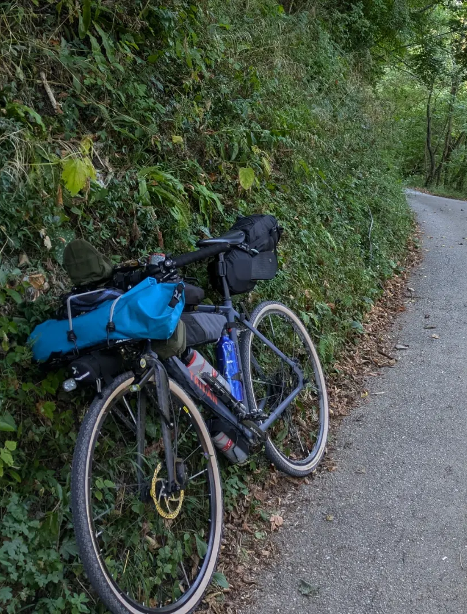
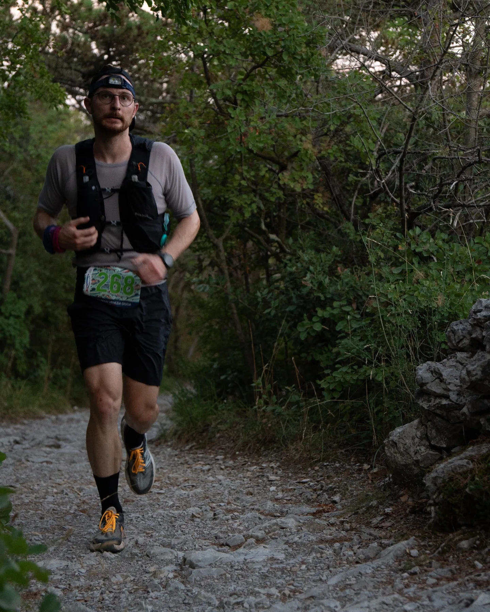
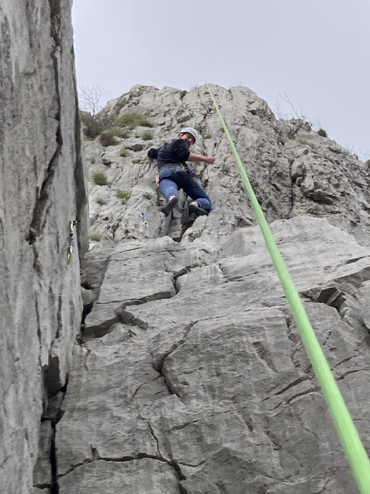
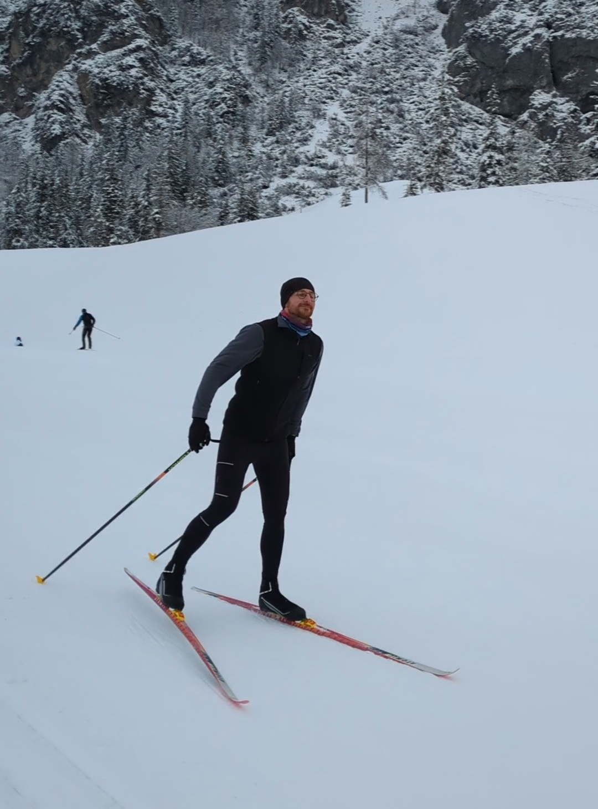

My nerdy side:
Since I was 13 I have a passion for coding and building computers. For some years I have also a lot of interest in Machine Learning and Neural Networks. This interest for ML was sparked by the work I did during my bachelor's thesis, which involved applying Self-Organizing Maps (SOM) Neural Networks to analyze concentration data for air pollutants. I'm particularly interested in applying machine learning to quantum chemistry and data analysis. To deepen this interest, I've been self-learning programming and data science, exploring new tools, and building small coding projects.
Topics that I'd like to explore in the future: Quantum Computing and Cryptography.
My sporty side:
In my free time, I enjoy doing sports, especially in the middle of nature
- Cycle - I love to use my bike to explore and travel, in a chill way
- Run - I started running on pavement and then I swiched to trail running, so I can explore places that I cannot easily reach with my bike
- Climb - I recently started to climb, I like the mood of climbing in the middle of nature (also it's a really good full body exercise!)
- Nordic/ XC ski - I started this activity in a really random way, but I immediately fell in love with it! Recently I did a course to learn the skating tecnique



